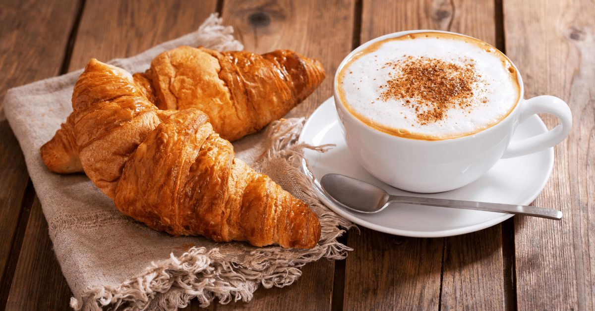
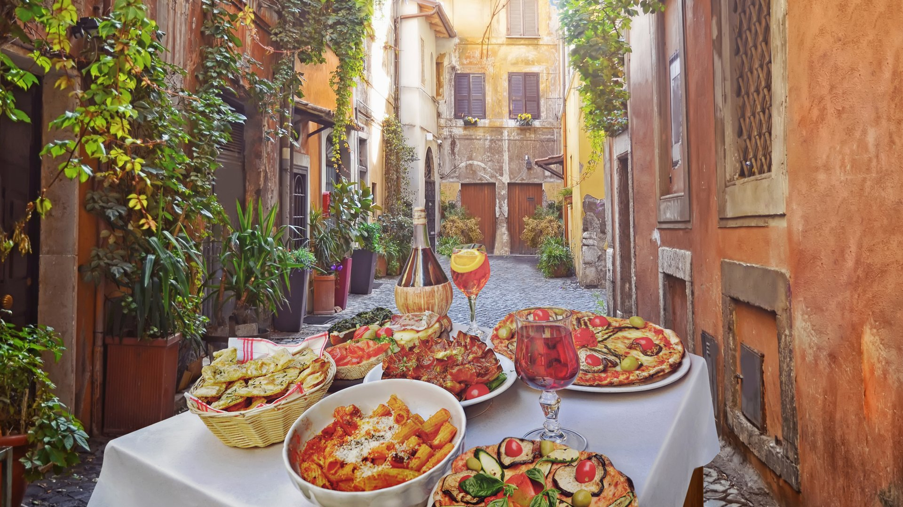
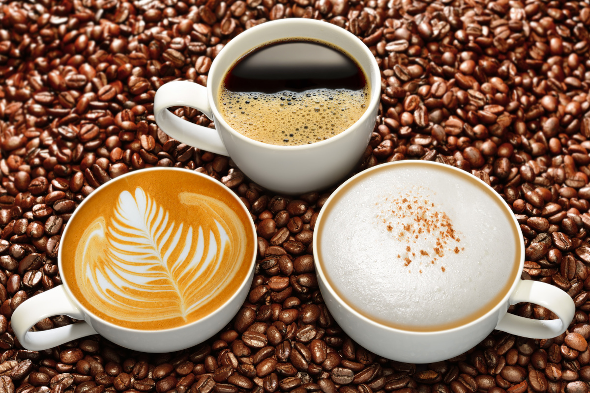

Amikor az olasz konyhára gondolunk, azonnal beugrik a pizza, a spagetti és a tiramisu – de Olaszország étkezési kultúrája ennél sokkal összetettebb. Az étkezés az olasz élet szerves része, nem csak a test táplálása, hanem társasági és kulturális élmény is. Az asztal körüli beszélgetések, a lassú evés, a helyi alapanyagok tisztelete és a többfogásos étkezés mind-mind hozzájárulnak ahhoz a gasztronómiai életérzéshez, amit csak úgy hívnak: *la dolce vita*.

Az olasz reggeli – azaz *colazione* – meglepően szerény. Általában egy cornetto (édes péksütemény, hasonló a croissant-hoz) és egy csésze erős kávé, gyakran cappuccino formájában. A kávézás itt nem hosszan tartó esemény, mint sok más országban: az olaszok gyakran a bárpultnál, állva isszák meg reggeli kávéjukat, gyorsan, de stílusosan.
Fontos szabály: tejjel készült kávét – például cappuccinót – délelőtt 11 után már nem illik fogyasztani, különösen nem ebéd után. Az olaszok szerint a tej nehezíti az emésztést, így étkezés után már csak eszpresszót isznak. Ha tehát délután négykor cappuccinót kérsz, azzal azonnal elárulod: turista vagy.
Az ebéd (*pranzo*) hagyományosan az olaszok fő étkezése, különösen a kisebb városokban és vidéken. Bár a modern életmód némileg megrövidítette ezt az időszakot, sok helyen még mindig megszokott a hosszabb ebédszünet, különösen délben, 13 óra körül.
Az igazi olasz ebéd többfogásos:
Bár a városi élet gyorsasága sokszor lerövidíti az ebédet egy egyszerű
tésztára vagy szendvicsre, ünnepnapokon vagy családi ebédeken teljes
pompájában él tovább ez a hagyomány. A vasárnapi ebéd különösen fontos
társadalmi esemény, gyakran akár 3 órán át is eltart.

A vacsora (*cena*) este 8 óra után kezdődik, és gyakran társas esemény. A déli tartományokban, különösen nyáron, a vacsora akár este 9-10 órakor is elkezdődhet. A vacsora lehet egyszerű – például egy tésztaétel vagy saláta –, de lehet ugyanolyan ünnepélyes is, mint az ebéd, különösen, ha vendégek vannak.
A családok gyakran együtt étkeznek, és a hangsúly nemcsak az ételen, hanem az együtt töltött időn van. Az asztal nem csak étkezésre szolgál: ott zajlanak a beszélgetések, viták, nevetések – az élet maga.
Az olasz étkezések ritmusában fontos szerepet játszik az időzítés és a strukturáltság. Az olaszok nem esznek útközben, nem sietnek, és soha nem keverik a tésztaételeket a főételekkel. Egy jó tésztát nem illik „elrontani” például salátával – minden ételnek megvan a maga helye és ideje.
Az olaszok ritkán fogyasztanak nagy adagokat – inkább kisebb fogások, egymás után. A minőség mindenek felett áll. Egy tökéletesen megfőzött al dente tészta többet ér, mint egy hatalmas, túlfőzött adag. A kevesebb itt tényleg több – de jobb.
Az olasz konyha lelke az alapanyag. A helyi piacok még ma is központi szerepet játszanak: friss zöldségek, kézműves sajtok, sonkák, olívaolaj – minden sarkon találni valami finomat. A szezonális étkezés nem divat, hanem természetes életforma. Télen articsóka, tavasszal spárga, nyáron paradicsom – az olasz háziasszony (és háziúr) pontosan tudja, mikor minek van itt az ideje.
Az olívaolaj szinte mindenre jó – sütéshez, salátára, vagy csak úgy egy darab kenyérrel. A sajtok világa is végtelen: mozzarella, parmigiano, pecorino, gorgonzola – minden tájnak megvan a saját specialitása. És akkor még nem beszéltünk a sonkákról, mint a pármai prosciutto, vagy a szalámikról.
Olaszországban az étkezés közösségi aktus. Nem egyedül esznek a képernyő előtt, hanem együtt az asztalnál. A beszélgetés éppoly fontos, mint az étel. Étteremben sem sietnek el a vacsorát – az asztalt akár egész estére lefoglalják. A pincér sem sürget: tiszteletben tartják, hogy az étkezés itt rituálé.
Ez a szemlélet tükröződik a híres *aperitivo* szokásban is – ez egyfajta elővacsora itallal és könnyű falatokkal, általában 18–20 óra között. A cél nem a jóllakás, hanem a társasági találkozás – egy kis prosecco, néhány olajbogyó, pár falat sajt, és egy nagy adag beszélgetés.

Egy olasz étkezés nem érhet véget egy jó desszert és egy csésze eszpresszó nélkül. A tiramisu talán a legismertebb, de ott van a cannoli, a panna cotta, vagy a sfogliatella is. A desszert gyakran egyben műalkotás is – nem csak édes, hanem szemet gyönyörködtető.
Az étkezés végén pedig jöhet a kávé – soha nem cappuccino, mindig eszpresszó. Rövid, erős, karakteres – akárcsak az olaszok.
Olaszország étkezési szokásai nemcsak a gyomrot, hanem a lelket is táplálják. Az idő, a figyelem, a társaság és a minőségi alapanyagok szeretete együtt adják azt a gasztronómiai élményt, amit világszerte irigyelnek.
Ha tanulni akarunk valamit az olaszoktól, akkor az az, hogy az étkezés nem kötelesség, hanem öröm. Nem sietség, hanem ünnep. És hogy az élet legszebb pillanatai gyakran egy jó tészta, egy pohár bor és a barátaink körében történnek.
{kind=link}